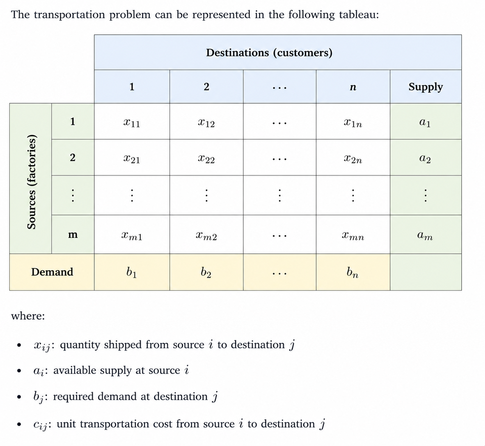

What Is Linear Programming Used For? Common Applications and Examples in Network Programming
1. What is Network Optimization
Network optimization is a special class of linear programming problems in which decisions are represented on a network consisting of nodes and arcs.
- Nodes represent entities, such as factories, warehouses, customers, jobs, or workers.
- Arcs represent the possible connections between nodes, such as transportation routes, communication links, or assignment decisions.
Depending on the application, the interpretation of the nodes changes:
| Problem | Nodes | Arcs |
|---|---|---|
| Transportation | Factories, warehouses, customers | Shipment routes |
| Assignment | Workers and jobs | Assignment decisions |
| Project scheduling | Activities | Precedence relationships |
| Telecommunications | Routers or servers | Communication links |
2. Categories of Network Programming
| Problem | Goal | Typical Applications |
|---|---|---|
| Shortest Path | Find the path with the minimum total distance, time, or cost between two nodes. | GPS navigation, routing deliveries, internet packet routing |
| Maximum Flow | Maximize the amount of flow that can be sent from a source to a destination, subject to arc capacities. | Pipeline capacity, data networks, water distribution, evacuation planning |
| Minimum-Cost Flow | Ship a required amount of flow through a network at the lowest total transportation cost. | Logistics, supply chain distribution, freight transportation |
| Transshipment | Determine how goods should move through intermediate facilities (warehouses or hubs) while minimizing total cost. | Distribution centers, warehouse networks, package delivery systems |
| Assignment | Match agents to tasks while minimizing cost or maximizing benefit. This is a special case of a network flow problem with one-to-one matching. | Assigning workers to jobs, students to projects, pilots to flights |
2.1 Transportation Problem
A transportation problem is min cost flow problem with the following two properties:
It is defined on a complete bipartite graph, where the nodes are divided into two disjoint sets: sources and destinations. Every source can potentially ship directly to every destination, so every source–destination pair corresponds to a decision variable.
Arcs have costs but there are no upper bound on the flows. (Supply and demand naturally cap the flow.)
LP formulation
In a tabular representation, each row corresponds to a source, each column corresponds to a destination, and each cell contains the decision variable \(x_{ij}\), representing the quantity shipped from source \(i\) to destination \(j\).

The tableau provides an intuitive way to understand the constraints of the transportation problem before writing the mathematical model.
The objective is to minimize the total transportation cost.
\[ \min \sum_{i=1}^{m}\sum_{j=1}^{n} c_{ij}x_{ij} \]
where
- \(c_{ij}\): unit transportation cost from source \(i\) to destination \(j\)
- \(x_{ij}\): shipment quantity from source \(i\) to destination \(j\)
Supply Constraints
Each source has a limited amount of available supply. In the table, each row corresponds to a source. Summing across a row gives the total amount shipped from that source.
For example, the first row represents \(x_{11}+x_{12}+\cdots+x_{1n}\), which is the total shipment leaving source 1. \[ \sum_{j=1}^{n}x_{ij}=a_i, \qquad i=1,\ldots,m. \]
Demand Constraits
Each destination has a required demand that must be satisfied.Similarly, each column corresponds to a destination. Summing down a column gives the total amount received by that destination.
For example, the first column represents \(x_{11}+x_{21}+\cdots+x_{m1}\), which is the total shipment arriving at destination 1.
\[ \sum_{i=1}^{m}x_{ij}=b_j, \qquad j=1,\ldots,n. \]
Non-negativity Constraints
Negative shipment quantities are not physically meaningful. \[ x_{ij}\ge0, \qquad i=1,\ldots,m,\; j=1,\ldots,n \]
Dummy Node
2.2 Transshipment Problem
The transportation problem assumes that goods move directly from source nodes to destination nodes. However, in many real-world networks, goods may pass through intermediate facilities such as warehouses, ports, or distribution centers before reaching the final destination. This leads to the transshipment problem.
In a transshipment network, the decision variable $ x_{ij}$ represents the amount shipped from node \(i\) to node \(j\). For example, if goods move from node 1 to node 3 and then from node 3 to node 4, we write:
\[ x_{13}, \qquad x_{34} \]
Here, node 3 appears as both the ending node of \(x_{13}\) and the starting node of \(x_{34}\). This means node 3 receives flow and then sends it onward.
In a transshipment problem, intermediate nodes do not create or consume flow. They only transfer flow. Therefore, for every intermediate node:
\[ \text{Total inflow} = \text{Total outflow} \]
LP Formulation
Let:
- \(x_{ij}\) = flow shipped from node \(i\) to node \(j\)
- \(c_{ij}\) = unit shipping cost from node \(i\) to node \(j\)
- \(f\) = total amount of flow sent from the source to the sink
The objective is to minimize the cost:
\[ \min \sum_{(i,j)\in A} c_{ij}x_{ij} \]
Why does the objective function look different?
The transportation problem is defined on a complete bipartite graph, where the nodes are divided into two disjoint sets: sources and destinations. Every source can potentially ship directly to every destination, so every source–destination pair corresponds to a decision variable. Therefore, the objective sums over all pairs:
\[ \min \sum_{i\in I}\sum_{j\in J} c_{ij}x_{ij}. \]
In a transshipment network, however, shipments can only travel along the existing arcs. Intermediate nodes are connected only to selected nodes rather than to every source or destination. As a result, the objective sums only over the set of arcs:
\[ \min \sum_{(i,j)\in\mathcal{A}} c_{ij}x_{ij}. \]
The notation
\[ \sum_{j:(i,j)\in\mathcal A} x_{ij} \]
means sum over all nodes \(j\) such that an arc \((i,j)\) exists.
In other words, it represents the total outgoing flow from node \(i\).
Similarly,
\[ \sum_{j:(j,i)\in\mathcal A} x_{ji} \]
sums the flow over all arcs entering node \(i\), representing the total incoming flow.
This notation is used in general network models because, unlike the transportation problem, not every pair of nodes is directly connected by an arc.
Source Node
For convenience, assume the network contains \(n\) nodes, numbered from \(1\) to \(n\). Node \(1\) denotes the source, node \(n\) denotes the sink, and the remaining nodes may serve as intermediate nodes.
The source node is where the flow originates. It generates and sends flow into the network but does not receive flow from any other node. Therefore, the total flow leaving the source must equal the value of the flow, denoted by \(f\):
\[ \sum_{j=1}^{n} x_{1j}=f. \]
Equivalently, using the flow balance form,
\[ \sum_{j=1}^{n} x_{1j}-f=0. \]
Intermediate Nodes
Intermediate nodes neither create nor consume flow. They simply transfer flow through the network. Therefore, for every intermediate node, the total inflow must equal the total outflow.
\[ \sum_{j=1}^{n}x_{ij} - \sum_{j=1}^{n}x_{ji} =0, \qquad i=2,\ldots,n-1. \]
Sink Node
Intermediate nodes only serve as transition points. They do not retain, create, or consume flow. Therefore, the total flow entering the sink must equal the value of the flow.
\[ \sum_{i=1}^{n} x_{in}=f. \]
Equivalently, using the flow balance form,
\[ \sum_{i=1}^{n} x_{in}-f=0. \]
Non-negativity Constraints
\[ x_{ij} \ge 0 \]
Flow cannot be negative.
2.3 Minimum-Cost Flow (MCF)
The Minimum-Cost Flow (MCF) problem is the most general cost-based network optimization model. Both the transportation problem and the transshipment problem can be viewed as cases of the MCF problem.
In the transportation and transshipment problems, we must first identify the role of each node before formulating the LP model.
- In a transportation problem, each node is classified as either a source or a destination (sink).
- In a transshipment problem, each node is classified as a source, an intermediate node, or a sink.
The transportation and transshipment problems are both special cases of the Minimum-Cost Flow problem.
- Transportation problem: A complete bipartite network with no intermediate nodes.
- Transshipment problem: A general network with intermediate nodes.
- Minimum-Cost Flow: A unified formulation in which every node satisfies the same flow balance equation.
The node type determines which flow balance equation is used.
The Minimum-Cost Flow (MCF) formulation takes a different approach. Instead of writing separate equations for different node types, it assigns every node a divergence (or net supply) denoted by \(b_i\).
If we define \(\text{Outflow} - \text{Inflow} = b_i\), then:
| Divergence (\(b_i\)) | Node Type | Interpretation |
|---|---|---|
| \(b_i > 0\) | Supply node | Generates flow into the network |
| \(b_i = 0\) | Intermediate node | Conserves flow (inflow = outflow) |
| \(b_i < 0\) | Demand node | Removes flow from the network |
The objective is still to minimize the total transportation cost:
\[ \min \sum_{(i,j)\in\mathcal{A}} c_{ij}x_{ij}. \]
subject to the flow balance constraints
\[ \sum_{j:(i,j)\in\mathcal{A}} x_{ij} - \sum_{j:(j,i)\in\mathcal{A}} x_{ji} = b_i, \qquad \forall i\in N, \]
and the capacity constraints
\[ l_{ij} \le x_{ij} \le u_{ij}, \qquad (i,j)\in\mathcal{A}. \]
where
- \(x_{ij}\): amount of flow sent along arc \((i,j)\).
- \(c_{ij}\): unit transportation cost on arc \((i,j)\).
- \(b_i\): divergence (net supply) at node \(i\).
- \(l_{ij}\): lower capacity bound of arc \((i,j)\).
- \(u_{ij}\): upper capacity bound of arc \((i,j)\).
The MCF formulation does not determine whether a node is a source, intermediate node, or sink. Those roles are still specified by the modeler through the values of \(b_i\). The advantage of MCF is that every node uses the same flow balance equation, making the formulation more compact and easier to generalize.
2.4 Max Flow Problem
The maximum flow problem is not concerned with transportation cost. Instead, its goal is to determine the largest amount of flow that can be delivered from a source to a sink.
The key idea is that every arc in the network has a capacity, representing the maximum amount of flow that it can physically carry. The optimization seeks to maximize the total flow while ensuring that no arc exceeds its capacity.
For example, imagine a reservoir supplying water to a city.
- The reservoir is the source node;
- The households collectively represent the sink;
- The pipes are the arcs connecting the network.
Although the reservoir may contain an abundant supply of water, each pipe has a limited diameter and can only carry a finite amount of water. These physical limitations are modeled by the capacity constraints on the arcs.
The maximum flow problem answers the following question:
Given the capacities of all pipes, what is the greatest amount of water that can be delivered from the reservoir to the households?
The capacity constraint for every arc is
\[ 0 \le x_{ij} \le u_{ij}, \]
where
- \(x_{ij}\) is the flow through arc \((i,j)\),
- \(u_{ij}\) is the maximum capacity of arc \((i,j)\).
The maximum flow is a property of the entire network, not of any individual arc. It depends on how the network is connected and is often limited by one or more bottlenecks. For example:
- Two parallel pipes with capacities 40 and 60 can jointly deliver 100 units of flow, even though neither individual pipe has capacity 100.
- Two pipes connected in series with capacities 100 and 20 can deliver at most 20 units, because the smaller pipe becomes the bottleneck.
From Maximum Flow to Minimum-Cost Flow
The standard Maximum Flow problem seeks to maximize the total amount of flow delivered from the source to the sink,
\[ \max f. \]
An equivalent formulation introduces a pseudo (artificial) return arc from the sink back to the source.
Original Network
Source --------------------► Sink
After Adding the Return Arc
┌────────────────────┐
│ │
▼ │
Source --------------------► Sink
◄────────────────────
Pseudo Return ArcThe return arc does not represent a physical connection. It is introduced purely for mathematical convenience.
Suppose the network delivers \(f\) units of flow from the source to the sink. The pseudo return arc simply returns those same \(f\) units back to the source. As a result, the network becomes a circulation, where no node creates or destroys flow.
Consequently, every node satisfies the same flow conservation equation,
\[ \sum_{j:(i,j)\in\mathcal A}x_{ij} - \sum_{j:(j,i)\in\mathcal A}x_{ji} = 0, \qquad \forall i\in N. \]
Furthermore, the flow on the return arc is exactly the total flow through the network,
\[ x_{ts}=f. \]
Instead of maximizing \(f\), we can therefore maximize the flow on the return arc,
\[ \max x_{ts}. \]
The pseudo return arc is not required to solve the Maximum Flow problem.
Its purpose is to transform a source-to-sink flow problem into a circulation problem, allowing every node to satisfy the same flow balance equation. This provides a unified mathematical framework shared by many network flow models.
Connecting Maximum Flow to Minimum-Cost Flow
The Maximum Flow problem is a maximization problem,
\[ \max x_{ts}, \]
whereas the Minimum-Cost Flow (MCF) problem is formulated as
\[ \min \sum_{(i,j)\in\mathcal A} c_{ij}x_{ij}. \]
To express Maximum Flow as a special case of the MCF problem,
- assign a cost of 0 to every original arc,
- assign a cost of \(-1\) to the pseudo return arc.
The objective then becomes
\[ \min (-1)x_{ts}. \]
Since minimizing \(-x_{ts}\) is equivalent to maximizing \(x_{ts}\),
\[ \min (-1)x_{ts} \equiv \max x_{ts}. \]
Therefore, the Maximum Flow problem can be viewed as a special case of the Minimum-Cost Flow problem.
The pseudo return arc and the negative cost serve different purposes.
- Pseudo return arc: transforms the network into a circulation, so every node satisfies the same flow conservation equation.
- Negative unit cost: converts the maximization objective into the minimization objective used by the Minimum-Cost Flow formulation.
Together, they allow the Maximum Flow problem to be expressed within the unified Minimum-Cost Flow framework.
2.5 Assignmnet Problem
2.5 Assignment Problem
The Assignment Problem is a special case of the Transportation Problem.
Like the transportation problem, the network consists of only two layers of nodes:
- a set of sources (e.g., workers, machines, or vehicles), and
- a set of destinations (e.g., jobs, tasks, or projects).
There are no intermediate (transshipment) nodes, so the network remains a complete bipartite graph, where every source can potentially be assigned to every destination.
The key difference lies in the supply, demand, and decision variables.
In the transportation problem, a source may ship many units to multiple destinations. In contrast, the assignment problem assumes that each source can perform exactly one task, and each task must be assigned to exactly one source. Therefore,
\[ a_i = 1, \qquad \forall i, \]
and
\[ b_j = 1, \qquad \forall j. \]
The decision variable is defined as
\[ x_{ij}= \begin{cases} 1, & \text{if source } i \text{ is assigned to destination } j,\\ 0, & \text{otherwise.} \end{cases} \]
Since an assignment either occurs or does not occur, the decision variable must be binary,
\[ x_{ij}\in\{0,1\}. \]
Consequently, the Assignment Problem is typically formulated as a Binary Integer Programming (BIP) problem, which is a special case of Integer Programming (IP).
The Assignment Problem can be viewed as a transportation problem in which every source has a supply of one unit and every destination has a demand of one unit. The additional binary constraint ensures that each source is assigned to exactly one destination and each destination receives exactly one assignment.
2.6 CPN Problem
Looking Ahead
The transportation problem is the simplest network optimization model because goods move directly from sources to destinations.
More advanced network models extend this framework by introducing intermediate nodes or additional operational constraints.
- Transshipment problem: allows intermediate warehouses or distribution centers.
- Minimum-cost flow problem: allows arbitrary network structures.
- Multi-period inventory networks: introduce storage and time.
- Supply chain networks: combine production, transportation, and inventory decisions into one optimization model.
Although these models become more sophisticated, they all rely on the same underlying principle of flow conservation.